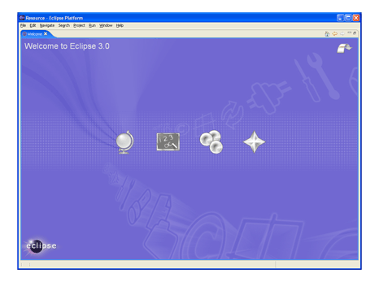

JDT
Change filtering for the refactoring preview dialog
The refactoring preview page now supports filtering of changes. This is especially helpful when updating textual matches in comments and strings is requested while renaming Java elements.

The screen shot shows the rename dialog filtered for textual matches while renaming a class TestCase to TestCasee.
Changes related to the visibility of Java elements can now be filtered as well.
Improved working set support for JDT actions
- Refresh is now available for working sets.
- Open/Close Projects is now available if one project contained in the working set is closed/open.
- Working sets can be used as a "Selected Resource" scope for
Java and Text search.
Rename Package refactoring can rename subpackages

In this example, package "junit.samples.money" would be renamed to "junit.examples.money", since the package name starts with "junit.samples.".
Customizable Content Assist
Repeatedly invoking content assist (Ctrl+Space on most platforms) now cycles through the different proposals categories.
You can assign separate key shortcuts to your favorite proposal categories and configure which should be shown in the default content assist popup.

Configure content assist on the Java > Editor > Content Assist > Work in Progress preference page.
A new extension point allows plug-in writers to contribute completion proposals and categories to the content assist process of the Java editor. See the org.eclipse.jdt.ui.javaCompletionProposalComputer extension point for details.
Detection of unnecessary $NON-NLS$ tags

To remove the unnecessary tags use Quick Fix (Ctrl + 1); for fixing multiple files at once, you can also install this internal tool.
Internal Java model cache function of the max heap size
Forward compatibility of .classpath file
Debug
Breakpoint import and export
Breakpoints can now be exported to a file. The export wizard lets you select the breakpoints to export together; the import wizard lets you optionally create a breakpoint working set.

System property launch variable
A new launch variable allows you to dynamically specify system properties as Java program and VM arguments from the Eclipse runtime. The variable accepts a single argument which is the name of the system property to be resolved at launch time. For example, the "java.home" system property would be referenced with "${system_property:java.home}".

Evaluation support for arrays
Evaluation and content assist are now supported for Java arrays. The selected array is referred to as 'this':

SWT
Animated GIFs
Animated GIF images can be saved to file.

For an example see the SWT snippet.
Desktop appearance notification
When appearance settings such as theme, font, or default colors are
changed for the desktop, an SWT.Settings event is issued for
the Display.

Dispose notification
Previously, when a SWT.Dispose event was received for a parent composite, all
the children were disposed and therefore could not be referenced. For 3.2,
the Dispose event is received before the children have been released in the OS.
Tool tips for columns
TableColumn/TreeColumn.setTooltipText(String).
Vertical CoolBar
SWT.VERTICAL style.

UI
Problems, Tasks and Bookmarks view supports multiple filters
It is now possible to define more than one filter on the problems, tasks and bookmarks views. These filters are additive so the view will show the union of the markers that satisfy these filters.
The user can add or remove filters as they wish.

Marker Limits moved to preferences
Marker Limits are now applied to all filters rather than defined one per filter.

Categorization added to Import and Export
The org.eclipse.ui.importWizards and org.eclipse.ui.exportWizards
extension points now support categorization.

Platform Text
Tooltips for annotations in Text editors
TextSourceViewerConfiguration which is used by text editors:

Annotation navigation in Text editors

Improved hyperlink navigation
Team/CVS
Import Team Project Set improvements
Team Project Sets that are stored in the workspace can now be imported directly using the Import Project Set operation available in the context menu of any *.psf file.
Commit comment templates
You can specify templates for commit comments via the Team > CVS > Comment Templates preference page. The templates will appear in the commit dialog off the history drop down menu.
PDE
Headless RCP application template
The New Plug-in Project creation wizard (File > New > Project...> Plug-in Project) now supports a workflow to create headless RCP applications, complete with a Hello World template.

Add a Welcome page to your product
The Branding page of the product configuration editor (File > New > Other...> Product Configuration) now has a Welcome Page section, which will help you create a template welcome page for your product.

Plug-ins for any OSGi framework

Sharable and portable PDE launch configurations
Plug-in manifest files participate in refactoring